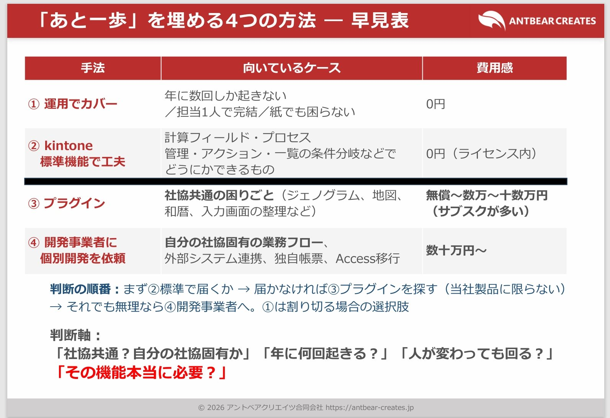
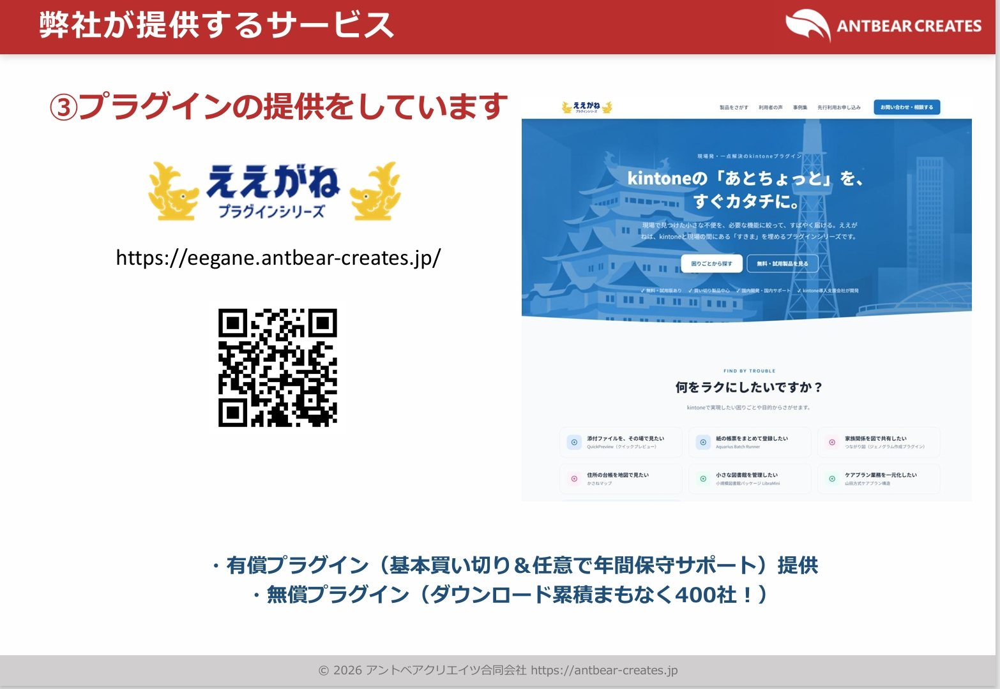
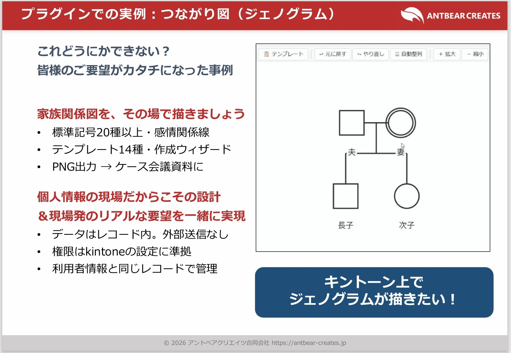
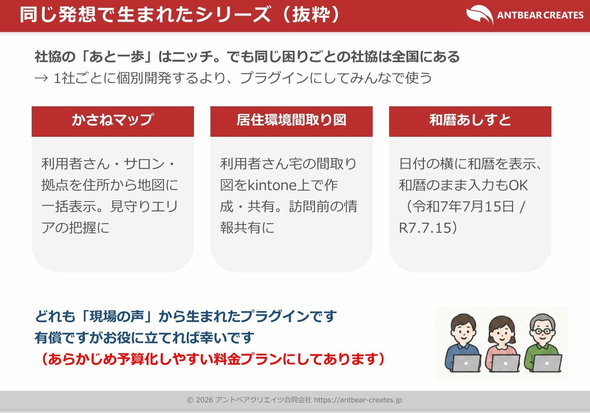
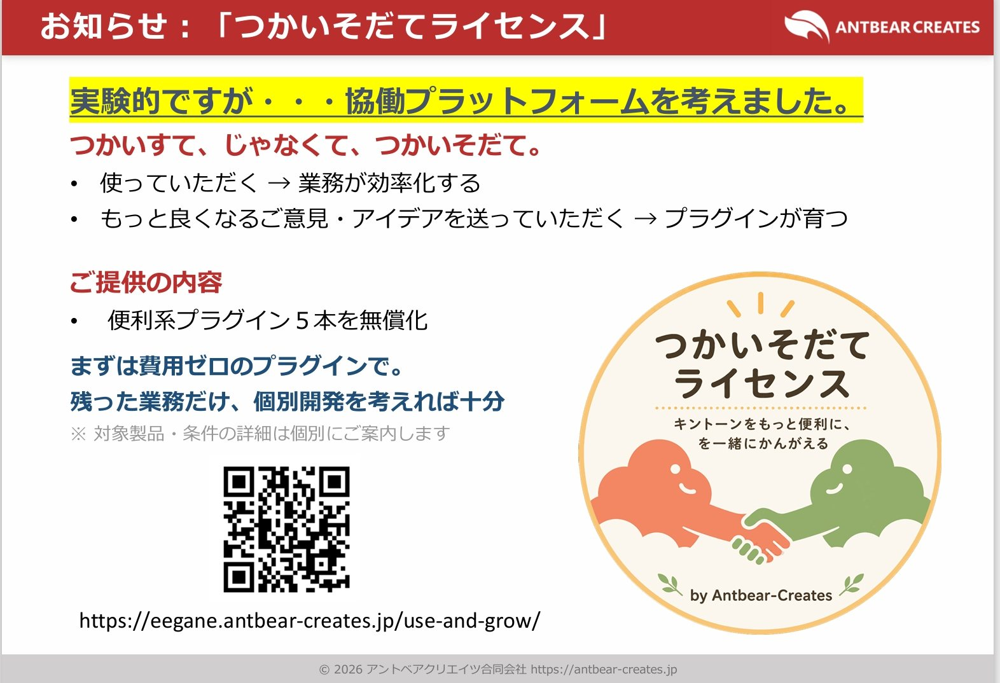

講演4
kintoneの『あと一歩』、どう埋める？
kintoneの『あと一歩』、どう埋める？
〜 社協の現場でわかった4つの手段 〜
アントベアクリエイツ合同会社 代表 森田 諭 氏


概要
社協や行政のkintone構築に10年以上伴走してきた経験から、AccessやExcelで作られた個別システムが属人化して誰も触れなくなる「あるある」を指摘。
kintone移行後に残る、社協独自のデリケートかつニッチなニーズ（ジェノグラムや地図表示など）である「あと一歩」を埋める判断基準や、現場の声から開発した「ええがねプラグインシリーズ」が紹介されました。
発表の重要トピック
- 「あと一歩」を埋める4つのアプローチ判断基準

- ① 運用でカバー（年に数回しか起きない業務：0円）
- ② kintone標準機能の工夫（計算、プロセス管理など：0円）
- ③ プラグイン（社協共通の課題に適用、ジェノグラム、地図、和暦など：数万〜十数万円）
- ④ 個別開発を依頼（独自の業務フロー、Access移行など：数十万円〜）
判断の順番は「まず標準機能（②）でできるか」→「届かなければプラグイン（③）を探す」であり、本当にそれが必要か、年に何回発生するかを判断軸にすることを推奨されています。 - 現場の声から生まれた「ええがねプラグインシリーズ」

- つながり図（ジェノグラム作成プラグイン）

標準記号20種以上、感情線を用いてkintone上で直接家族関係図を描画可能。PNG出力してケース会議資料に添付できます。データはkintoneのレコード内にのみ保存され、外部に送信されない安心設計です。 - QuickPreview（クイックプレビュー ※無料）添付されたPDF、Word、Excelなどを、ダウンロードフォルダに落とすことなく、kintoneの画面内の小窓でワンクリックプレビューできる超便利プラグインです。
- かさねマップ ／ 和暦あしすと

拠点・サロン・利用者の住所から地図上へ一括ピン表示する「かさねマップ」、西暦のみのkintoneに「令和7年7月15日 ／ R7.7.15」といった和暦での入力を可能にする「和暦あしすと」などが紹介されました。 - つかいそだてライセンス（協働プラットフォーム）の提案

便利系プラグイン5本を「無償提供」する代わりに、より良くするための意見やアイデア（フィードバック）をユーザーから集め、一緒にプラグインを育てていく実験的なコミュニティプラットフォームの開始が発表されました。
- つながり図（ジェノグラム作成プラグイン）